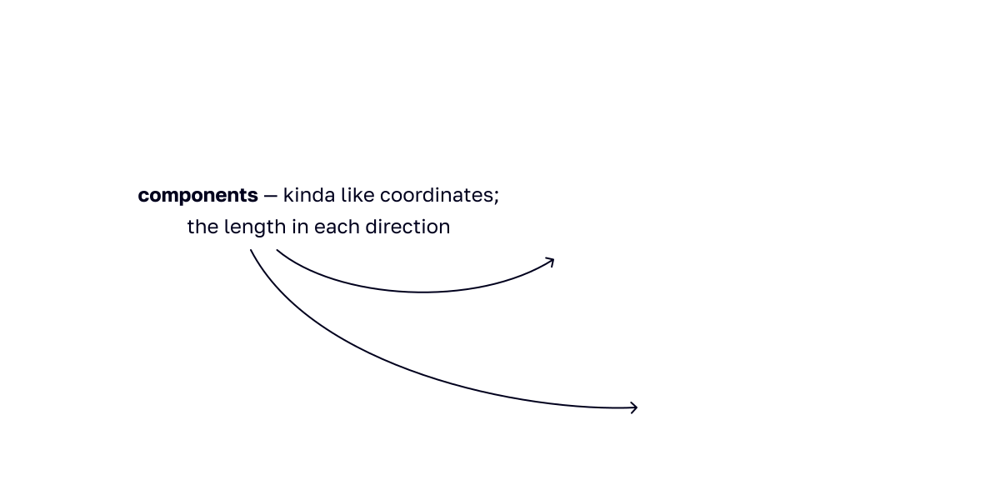
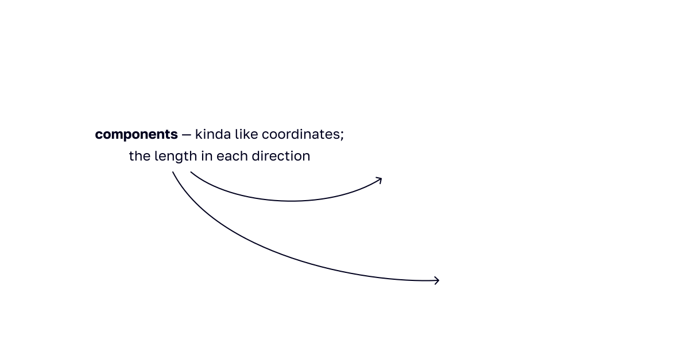
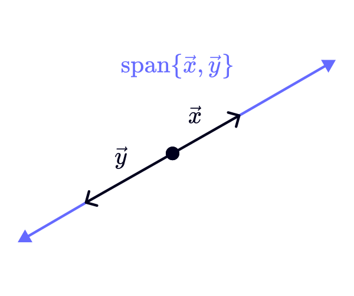

The Basics
Vectors, linear combinations, span, and bare-bones matrix algebra. Scroll to begin.
Vectors
 

Linear Combinations
If you have a collection of vectors, you call them a set. The only restriction here is no duplicates.
Another important term is a linear combination: a vector produced scaling and/or adding vectors.

The span of a set is ALL possible linear combinations of its vectors. As an example, the span of a singular vector is a line (scaling up and down to infinity).
So what about the span of two vectors? A plane? Not always. That depends on a little something called linear independence.
Linear Independence
These two vectors are linearly independent, so the span is a plane...

...but these two are not. They are linearly dependent because y is a linear combination of x (specifically, y is a scaled copy of x, and vice versa).
So what exactly is linear independence? Basically, vectors in a set are not redundant.
There are a few ways to think about it:
the number of vectors matches the dimension of the span (in the first example, 2 vectors making a 2-D plane = linearly independent)
each vector brings a new direction to the set (in the second example, y does not bring a new direction to x = NOT linearly independent)
The super formal definition is that the only linear combination of the vectors that equals zero is if and only if ALL the coefficients are zero.
$$0=c_1v_1+x_2v_2+...+c_nv_n$$
Matrices
A matrix is a grid with m rows and n columns of elements (not components), labeled by their row, then their column.
For our sake, a matrix is a function that acts on a vector. Input a vector, output a vector. For our sake, the calculations are not important.
$$A_{m\times n} = \begin{bmatrix} a_{1,1} & a_{1,2} & ... & a_{1,n} \\ a_{2,1} & a_{2,2} & \\ \vdots & & \ddots \\ a_{m,1} &&& a_{m,n} \end{bmatrix} $$
First off, the height of your vector must match the width of your matrix. Otherwise everything breaks.
The process for each row:
multiply the first A element by the first x component
multiply the second A element by the second x component
multiply the third A element by the third x component
...you get the idea
then add each row up and you're done!
So you put in a vector of size n, and output a vector of size m.
Need a more concrete example? Here you go!
Linearity
The important thing, though, is that matrices are linear operations! Hence, the name linear algebra.
That means addition and scalar multiplication are distributive, so:
Yippee! This is a super useful property that doesn't happen very often. (For example, the function f(x) = x2 is not linear, because f(2x) ≠ 2f(x).)
And that's it for the basics!
Take me to the next section ->